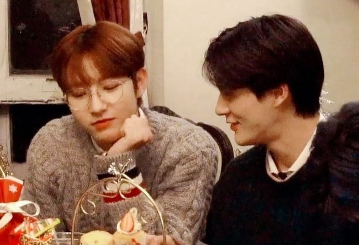

Ketuk pintunya untuk melangkah masuk ke dalam ruangan...
✨
I
The First Glance
🍂
II
Echoes of Laughter
🎵
III
Melodies We Share
💌
IV
Letters in Silence
☕
V
The Little Details
ROOM I
The First Glance
Perhaps fate does not always arrive with the thunder of a dramatic storm; sometimes, it slips in quietly on the static of a midnight FM frequency. It began with a melancholic melody—a stray song of heartache I cast out into the ether, simply searching for an echo in an empty room. I never anticipated that my small plea for a sad tune would summon you from the shadows, carrying the exact harmonies I desperately longed to hear.
In that fleeting digital convergence, two wandering strangers paused beneath the flickering lights of a virtual night. There were no grand portents, no sudden shifts in the stars—only the quiet realization that a random coincidence had somehow woven our paths together. A simple track shared in the dark became the invisible threshold we crossed, transforming an ordinary night into the genesis of everything that followed. Like an ember catching fire in a forgotten hearth, a solitary refrain quietly birthed an entire universe of words, laughter, and unwritten tomorrows.
ROOM II
Echoes of Laughter
In the midst of exhausting days, law court simulations, and endless piles of files, we somehow found our own chaotic sanctuary within a screen. These captured fragments are living proof that absolute chaos can turn into the sweetest distraction.
I. The Infinite Geprek Devotion
A culinary devotion declared right before my eyes, turning a simple box of spicy chicken into our sweetest inside joke.
II. The Symphony of Busyness
Caught in the relentless current of endless files, organizational chaos, and the quiet fatigue of demanding days.
III. The Nursing Student's Overload
When the heavy burdens of clinical shifts and sleepless academic nights found a safe, understanding harbor in each other's words.

IV. The "Ntik" Chronicles
The birth of a cherished moniker—where being called 'ntik' became a gentle, exclusive sanctuary amidst playful teasings.
V. The Unspoken Comfort
A lingering bickering that always dissolves into warmth, proving we are each other's favorite place to return to.
ROOM III
Melodies We Share
A collection of quiet hours, slow melodies, and the unspoken words we share when the world goes dark. Press play, let the soft notes echo through, and lose yourself in the warmth of our private soundtrack.
ROOM IV
The Written Sanctuary
To the one who turned quiet days into home,
Looking back at everything, I find myself deeply grateful that our paths crossed. Out of all the timing and coincidences in the world, meeting you remains one of the quietest yet most profound blessings in my life.
Thank you for making that first move and reaching out to me. What started as a simple gesture slowly unfolded into a safe haven I never knew I needed. Thank you, too, for being the remarkably resilient person you are—for standing strong, keeping your chin up, and pushing through even on days when the weight of everything felt overwhelming. Your strength is something I admire more than words can say.
And thank you for endlessly listening to all my endless yapping, my random thoughts, and my daily chaotic stories. You never made me feel like I was too much. Instead, you gave my noisy inner world a comfortable seat and a warm ear. Thank you for making me smile in ways no one else can, and for bringing a gentle kind of happiness into my days.
There are a thousand more little things I am thankful for, but above all, I am simply glad it is you. Thank you for being you, and for letting me be a part of your journey.
With all my fondness, — Always yours
ROOM V
The Final Chapter
"Before we close this chapter and turn the final page, here are a few little truths, gentle reminders, and funny little things that make every single day with you worth remembering..."
✦The Ultimate Geprek Lover: The absolute connoisseur of spicy crushed fried chicken—no matter the hour.
✦Vegetable Advisory: A friendly public service announcement: please eat your greens once in a while!
✦The Jeno Rivalry: The official professional jealous reactor whenever Jeno is brought up into the conversation.
✦Giselle’s Fan Club: Completely, hopelessly, and proudly infatuated with Giselle.
✦Night Owl Care: Certified night owl Alfie, who urgently needs a strict reminder to take vitamins and get some proper rest.
May our days ahead be filled with more quiet laughter, good food, endless late-night talks, and stories we haven't even written yet. The night is still young, and our book is far from over.